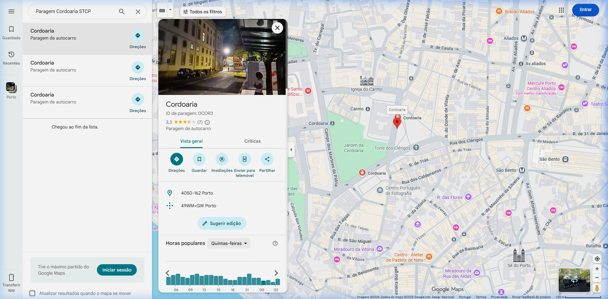
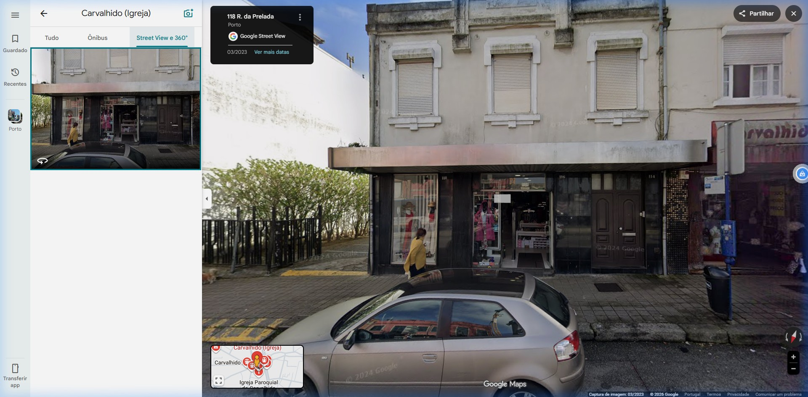
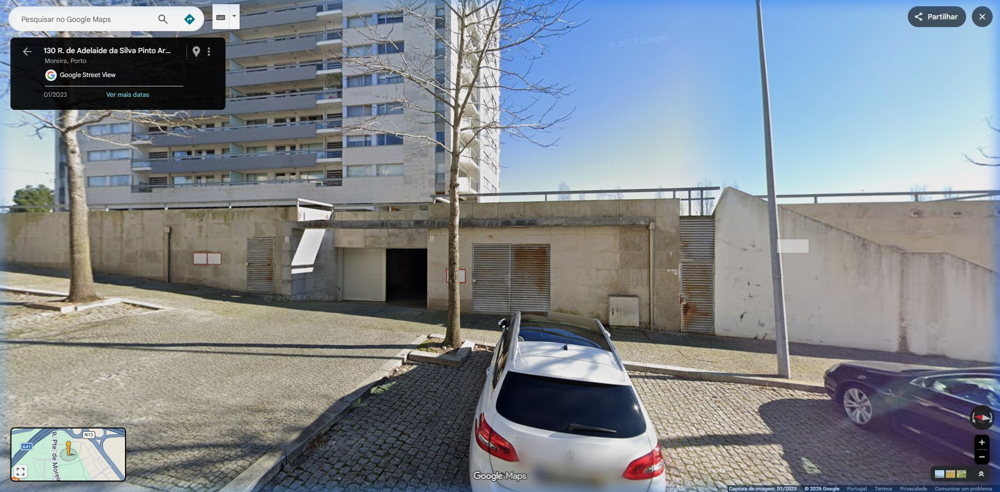
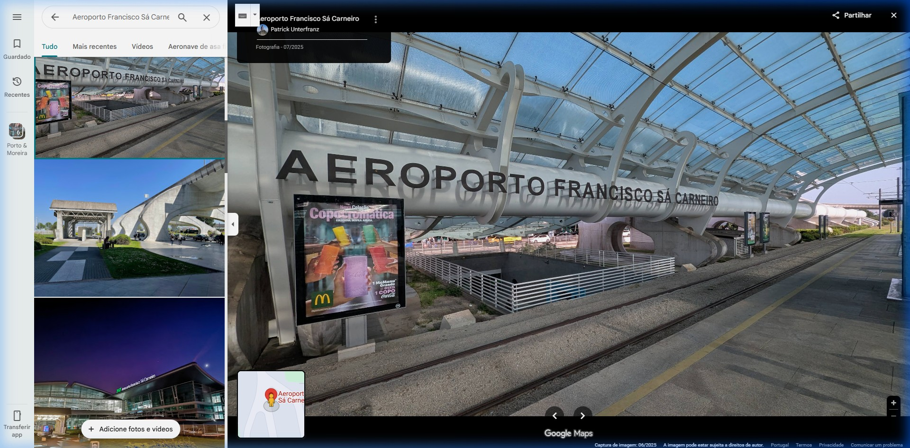
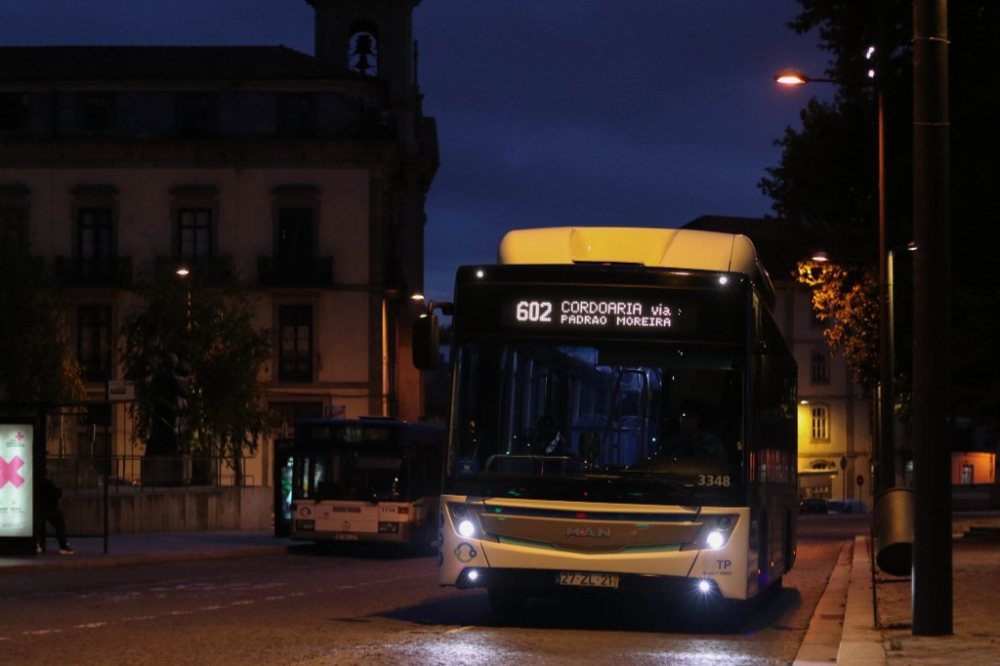
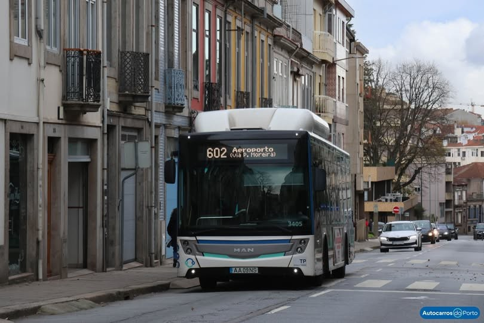
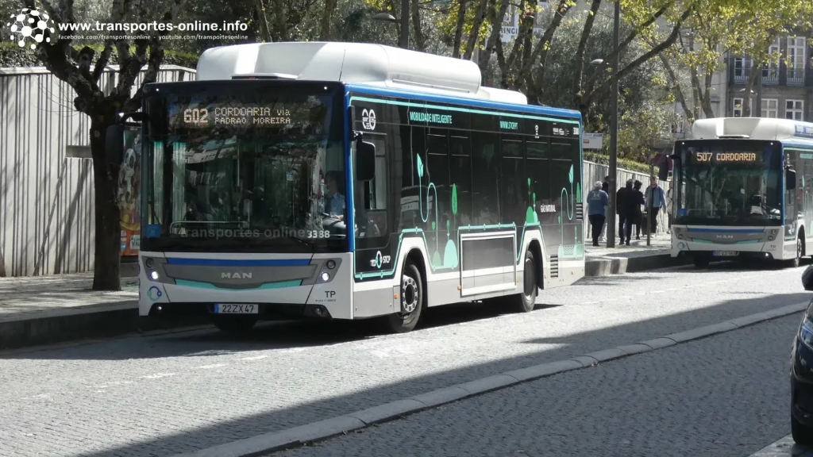
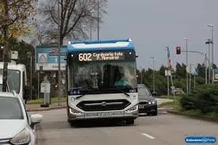

Cordoaria — Aeroporto via Padrão Moreira
O percurso icónico que cruza os pólos vitais e interliga a cidade de forma impecável.

O epicentro do movimento portuense. Onde a cidade pulsa antes da grande travessia iniciar.

A praça do tráfego. Equilibrando os nós automobilísticos e dando prioridade ao transporte vital.

A variação técnica. Uma ligação crucial servindo os corredores secundários da zona metropolitana.

O destino global. A ligação terminal que conecta as ruas cosmopolitas com a entrada aérea da nação.
Registos fotográficos submetidos pelos fiéis seguidores do STCP Citelis 18.



